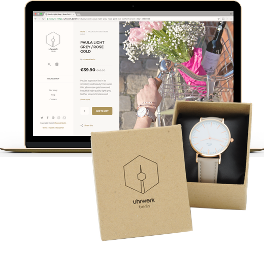
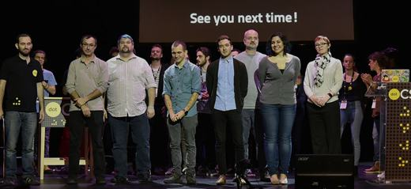
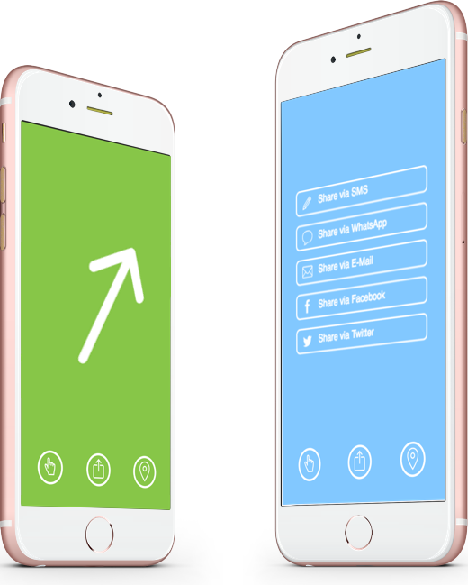

I am a freelancing jack of all trades with nearly 20 years of
experience in IT Consulting, Agile Coaching & Software Engineering.
I love founding. I love Open Source. I love startups. I love to work
with highly skilled teams. I love big challenges and cat videos
Current challenges

Representative Managing DirectorUhrwerk Berlin
We created a timekeeper of Berlin's vibes, people and attitude.
Berlin - my home - a melting pot of fashion, art, politics and music.
A historic city which became the international hotspot for
unconventional street style, creativity and fun loving people.
Anything can happen on a day/ night out in Berlin!
You can wear our Uhrwerk Berlin watch for any occasion - it's
simplicity makes it your perfect accessory.
Chic or edgy - feel free and timeless like Berlin! Order at
https://uhrwerk.berlin
Lead Frontend-EngineerdokSAFE GmbH
Team Lead responsible for building a Microsoft Azure-based office
software from ground-up using Electron, Angular 4, Typescript, Jest,
Sass & Webpack

Initiator & Board MemberNerds of all Trades
International network for high-potential frontend developers,
knowledge transfer, meetups & conferences. Blog with an Open-Source
Pull-Request at
https://nerdsofalltrad.es
Founderedoclet
The tldr; for news. edoclet generates one-sentence-abstracts from
several sources of news for a sneak preview of what is trending

Foundernip.to
is a free service to share your current location with friends.
Use nip.to with your smartphone or tablet computer. Get your current
location and share a special link via E-Mail, SMS, WhatsApp, iMessage
or whatever. Once your friends open that link they are routed via a
simple compass app to finally nip to you. Great for hanging out in
the park, festivals, finding the way out of the desert and even lost
cars
Past projects
Senior Frontend-EngineerImmobilien Scout24 GmbH
Frontend-Engineer responsible for know-how- and experience-building
of edge frontend-technologies
Delivery LeadDeutsche Post E-POST Development GmbH
Team Lead responsible & accountable for product and backlog.
Supporting a big team to work the agile way. Killing impediments
Scrum-Master-style. Inter-team management for product evolution and
legacy migration
Senior Frontend EngineerDeutsche Post E-POST Development GmbH
Rebuilding the legacy E-POSTBRIEF-Portal from scratch with modern
technologies like Angular.js on a scalable and virtualized
infrastructure. Register at
https://portal.epost.de
FounderboffR GmbH
Local event promotion and search engine — the social way. 2.4 million
subscribed users in Germany, Netherlands, Switzerland and Austria
Consultant & Software EngineerStrategy for IT challenges
Freelance-based projects at Deutsche Telekom AG, Tazaldoo GmbH,
IBB Investitionsbank Berlin, Daily Deal GmbH, Klickfilm U.G.,
Neutrinity GmbH, Media.net BerlinBrandenburg, KLab Educmedia GmbH,
MindQ GbR
Senior Software Engineeradesso AG
Project Management, Consulting, Coaching and Software Engineering
projects at Bitmarck Holding GmbH, DAK Gesundheit, Blitzstrom GmbH,
HEK - Hanseatische Krankenkasse, Belectric Trading GmbH, Zurich
Winterthur
http://adesso.de
IP Systems EngineerMCI/ Verizon Business
Development of customer billing portal OnlineManager II from frontend
to backend down to SIP protocol and auto-provisioning Cisco routers.
http://verizon.com
IT ConsultantDIS Informationssysteme GmbH
Software Engineering & Coaching projects at ARCOR AG & Co. KG,
Caterpillar INC., O2 Germany GmbH, PSI AG, E-Plus Mobilfunk GmbH &
Co. KG, Vodafone GmbH, Skogforsk Sweden
Frontend EngineerCreative Web Publishing GbR
Creating websites that were optimized for Netscape Navigator at
800x600 resolution and 256 colors, sigh.
Speaker
ES6 syntactic sugar you should be using today See slidesImmobilienscout24
Geek frontend technologies E-POST
Freemium business models Alex TV
Fun retrospectives @gile nite
Technologies for rapid prototyping startups betahaus
Low budget architectures Payment Wall
Why website-performance will boost your business hub:raum
2 Million users in 3 months Pitchfreunde
Mastering CSS Animations like a boss Startup Bootcamp
Certifcates
Diploma Information Technology & business administration University of Applied Sciences Dortmund/ Cologne
Master of Arts (M.A.), Computational Linguistics and Artificial Intelligence University of Osnabrück